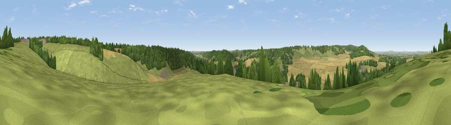

Viewpoint near Lacey Green
#33048 in England · top 46% of its area beats it · near Lacey GreenThe view, rendered

A 360° render of this exact spot computed from the terrain model, tree cover and land cover — summer colours, afternoon light, calibrated against photographs of famous viewpoints. Real trees, hedges and buildings will differ in detail.
The panorama
Grey silhouette: terrain skyline in each direction (720 bearings, Earth curvature and refraction included). Dashed green: skyline with trees (+15 m) and buildings (+8 m) as obstacles. Blue strip: how far the ground is visible on each bearing.
Where the view opens
Wedge length = distance to the farthest visible ground on that bearing (vegetation-aware). Rings at 10, 25 and 50 km.
What fills the view
47% grassland · 26% cropland · 25% woodland · 2% built-up
Angular shares of the visible panorama (visual magnitude), not map area. Landscape diversity 0.49 (0–1 Shannon).
Key numbers
More beautiful places nearby
The staircase of upgrades: each row has a higher view potential than everything closer. Driving times are estimates from straight-line distance, calibrated against real road routing — check an actual route before setting out.
| Place | Direction | Drive | Score |
|---|---|---|---|
| Viewpoint near Radnage | W · 3 km | ~8 min | 46.6 |
| Viewpoint near Whiteleaf | N · 4 km | ~9 min | 58.2 |
| Brush Hill | N · 4 km | ~9 min | 67.9 |
| Viewpoint near Whiteleaf | N · 5 km | ~11 min | 70.1 |
| Viewpoint near Chinnor | WNW · 5 km | ~11 min | 74.5 |
| Coombe Hill Monument | NNE · 8 km | ~16 min | 75.5 |
| Viewpoint near Woolstone | WSW · 53 km | ~75 min | 76.7 |
| Martinsell viewpoint | WSW · 73 km | ~96 min | 77.3 |
51.68722, -0.82208 · source: screening · position refined by local search. Computed location — check access rights before visiting.